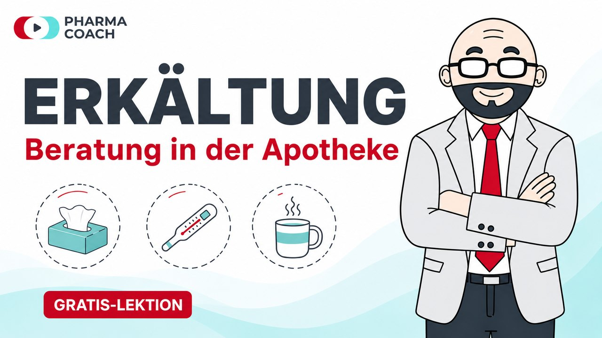

شاهد استطباباً كاملاً بخطواته الست كلّها، دون أي اشتراك.

كل استطباب في 6 خطوات واضحة.
مباشرةً من الصيدلية (Offizin)، لا من الكتب الدراسية.
10–15 دقيقة لكل درس.
التركيز على الحوار عند طاولة البيع، لا على نظريات علم الأدوية.
كل استطباب مع توصيات إضافية مبرَّرة علمياً.
من إعداد صيدلاني مرخَّص (approbiert) ومدير فرع، من قلب العمل اليومي في الصيدلية.
اشتراك سنوي واحد: كل محتوى OTC، إضافةً إلى جميع الكورسات الجديدة التي تُضاف تباعاً.
اشتراكك ينمو معك: هذه الكورسات قيد الإعداد فعلاً، وهي مشمولة في السعر.
الاستشارة في الأدوية الخاضعة للوصفة الطبية: التأثير، وطريقة التناول، والتداخلات الدوائية، والكلمات المناسبة عند طاولة البيع.
نظام إدارة الجودة (QMS)، وحماية البيانات، والنظافة الصحية، والسلامة المهنية، والإسعافات الأولية.
تحليل منظَّم لمجمل الأدوية التي يتناولها المريض.
مواقف استشارية نموذجية من العمل اليومي في الصيدلية.
هل أنت في مسار معادلة الشهادة كصيدلاني في ألمانيا؟ يُعدّك Pharma-Coach بشكل موجَّه لامتحان اللغة التخصصي (Fachsprachprüfung) وامتحان المعرفة (Kenntnisprüfung)، مع التركيز على اللغة والمعرفة التي تهمّ فعلاً في الامتحان وعند طاولة البيع.
التواصل الطبي، والمصطلحات التخصصية، ومواقف الامتحان النموذجية، بتدريب قريب من الواقع العملي.
علم الأدوية، والقانون، والممارسة: تحضير منظَّم وموجَّه للامتحان.
حاصل على الترخيص (Approbation) منذ 2020، بخبرة تزيد على 17 عاماً في العمل الصيدلاني والتسويق الدوائي. درس MBA لمدة سنتين، وهو المؤلف الرئيسي لكتاب «دليلك إلى الترخيص الألماني كصيدلاني»، ومؤسّس قناة يوتيوب Pharma-Coach.
التقييمات قريباً. تنطلق المنصة في نيسان (أبريل) 2027.